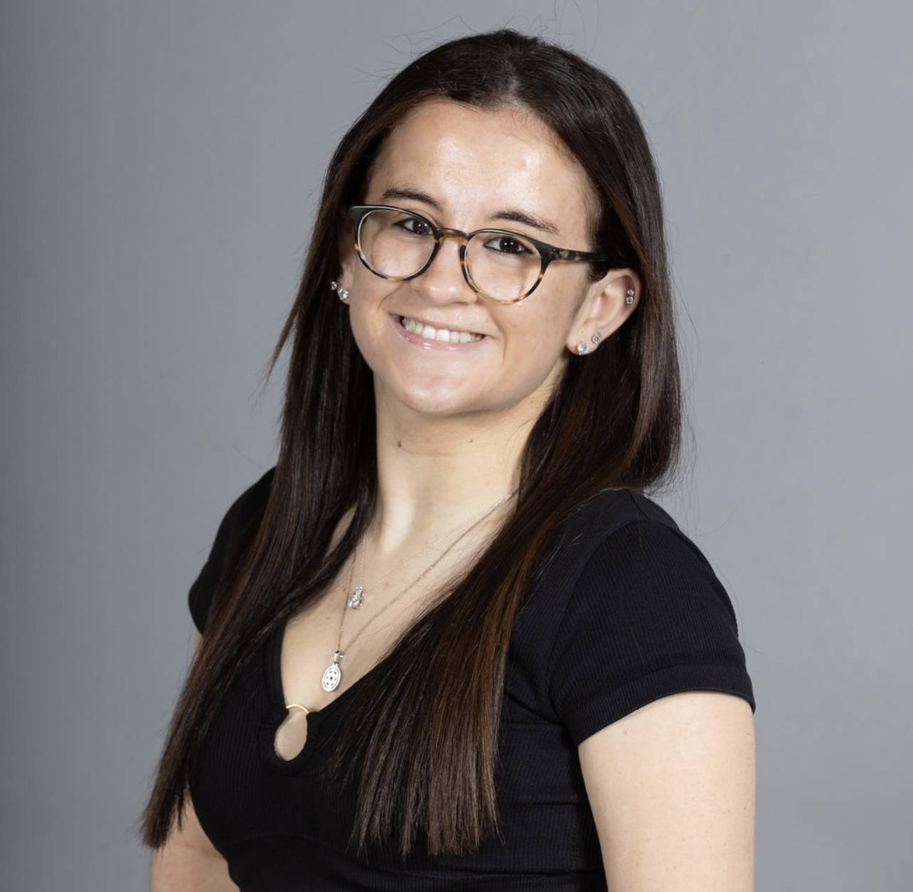

JOURNALISM • PSYCHOLOGY • DISABILITY STUDIES
Journalism and Psychology student at the University of Maryland interested in storytelling, disability advocacy and creating a more inclusive world.
ANTICIPATED MAY 2028
College Park, MD
Bachelor of Arts, Journalism and Psychology
AUGUST 2024 - MAY 2026
College Park, MD
FEBRUARY 2026 - PRESENT
Lead Peer Mentor | College Park, MD
JUNE 2021 - JULY 2026
Head Counselor, Social Media Coordinator | Boca Raton, FL
SEPTEMBER 2024 - PRESENT
Club Member | College Park, MD
JUNE 2026 - PRESENT
Intern | Boca Raton, FL
OCTOBER 2024 - DECEMBER 2025
Staff Writer | College Park, MD
OCTOBER 2024 - MARCH 2025
Freelance Writer | College Park, MD
SEPTEMBER 2025 - OCTOBER 2025
Freelancer | College Park, MD
Story pitching, news reporting, feature writing and campus event coverage.
Instagram reels, infographics, carousels and Facebook content.
Academic guidance, peer mentorship, social engagement and disability inclusion.